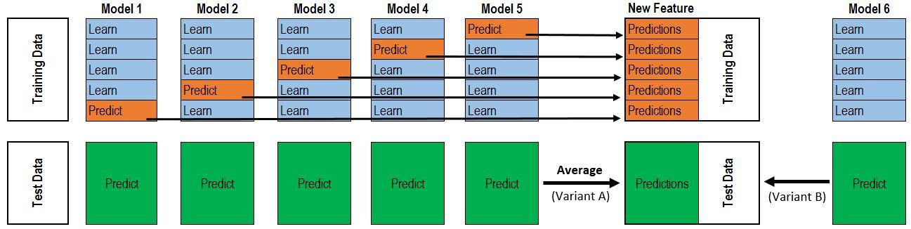

Stacking方法详解
stacking方法,是Kaggle比赛中尝试较多的方法。stacking背后的基本思路就是，使用一群基分类器(第一层),然后使用另外一个分类器(第二层)来组合前面第一层的预测结果,stacking的目的最直观的理解就是减小泛化误差.在1992年《STACKED GENERALIZATION》一文中还有一句关于Stacking的理解:
Stacked generalization can be seen as a more sophisticated version of cross-validation, exploiting a strategy more sophisticated than cross-validation’s crude winner-takes-all for combining the individual generalizers. （翻译：Stack泛化可以被看作是一种更复杂的交叉验证版本，它利用了一种比交叉验证更加复杂的策略，它可以将各个泛化器组合在一起。）
至于stacking为什么有效,引用University of Notre Dame的ensemble的ppt中的两句话:
- If a particular base-classifier incorrectly learned a certain region of the feature space, the second tier (meta) classifier may be able to detect this undesired behavior.（翻译：如果特定的基础分类器错误地学习了特征空间的某个区域，则第二层（元）分类器可能能够检测到这种不期望的行为。）
- Along with the learned behaviors of other classifiers, it can correct such improper training.（随着其他分类器的学习行为，它可以纠正这种不正确的训练。）
线性加权融合方法
传统方法

假设第一层有$M$个模型，记为$c_1, c_2, …, c_M$。假设采用$N$-fold的方法划分训练集$R$和测试集$E$，分别记为$r_1, r_2, …, r_N$和$e_1, e_2, …, e_N$。
对于任意模型$c_i$，使用训练集$R / r_j$，进行训练。训练完成后，对训练集$r_j$进行预测，记为$Pr_{c_i, r_j}$。对于任意$r_j$，模型$c_i$都会得到一个预测结果。将这些预测结果合并起来，可以得到模型$c_i$对训练集的预测，$Pr_{c_i, r_1} \cup Pr_{c_i, r_2} \cup … \cup Pr_{c_i, r_N} = Pr_{c_i}$。对于每一个模型，重复上述的步骤，都可以得到一个对训练集的预测结果，记为$Pr = { Pr_{c_1}, Pr_{c_2}, …, Pr_{c_M} }$。
对于任意模型$c_i$，在上述的训练过程中，会进行$N$次训练。每次训练后，还需要对训练集进行预测，$N$次预测之后的结果求平均，得到模型$c_i$对训练集的预测$Pe_{c_i}$。对于每一个模型，都可以得到一个对测试集的预测结果，记为$Pe = { Pe_{c_1}, Pe_{c_2}, …, Pe_{c_M} }$。
第二层选择一个新的模型（通常会采用LR模型,不过很多非线性的模型例如XGB等等也都在一些比赛中取得了非常好的效果），对$Pr$进行训练，训练后预测$Pe$，即为最后的结果。
融入多项式等特征
该方法与上面的方法的一个比较大的区别是,在得到$Pr$之后，加入多项式等其他特征.当然其他的组合也都可以进行尝试.具体的说，在得到$Pr = { Pr_{c_1}, Pr_{c_2}, …, Pr_{c_M} }$之后，可以对任意两个特征$Pr_{c_a}, Pr_{c_b}$进行相乘（相除或者其他操作），形成一个新的特征。